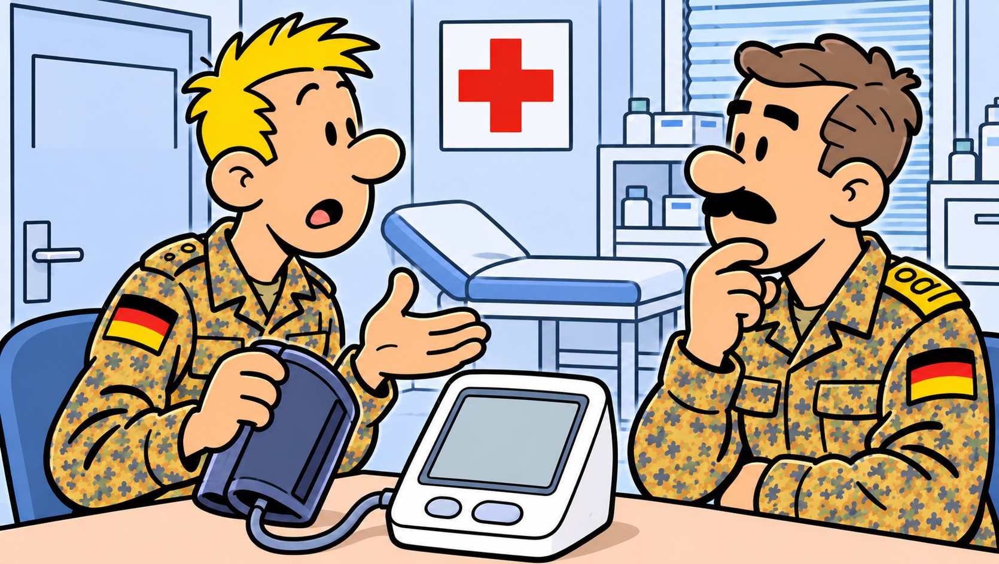

Medizinmilitärische Dialoge · 09 · B1
Ein defektes medizinisches Gerät

A. Multiple Choice
Hören Sie das Gespräch und kreuzen Sie die richtige Antwort an.
Transkript – Lückentext
Hören Sie das Gespräch noch einmal und ergänzen Sie die fehlenden Wörter. Achten Sie auf die Groß- und Kleinschreibung.